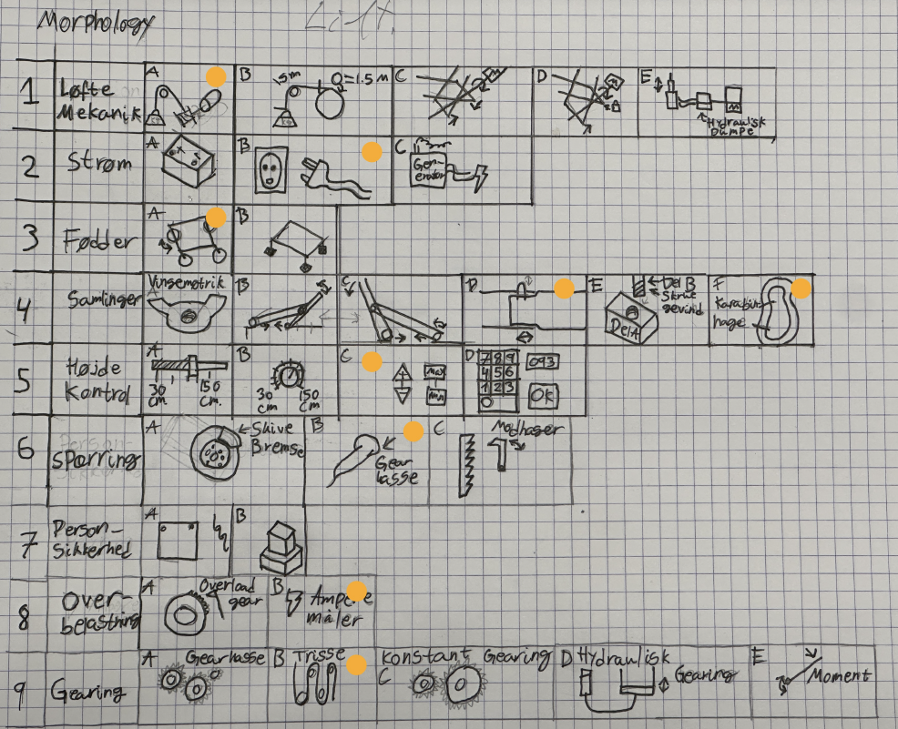
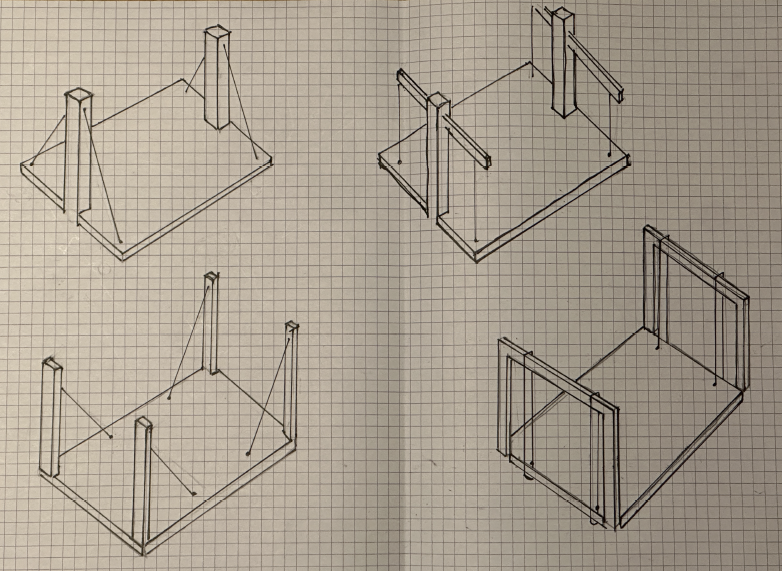
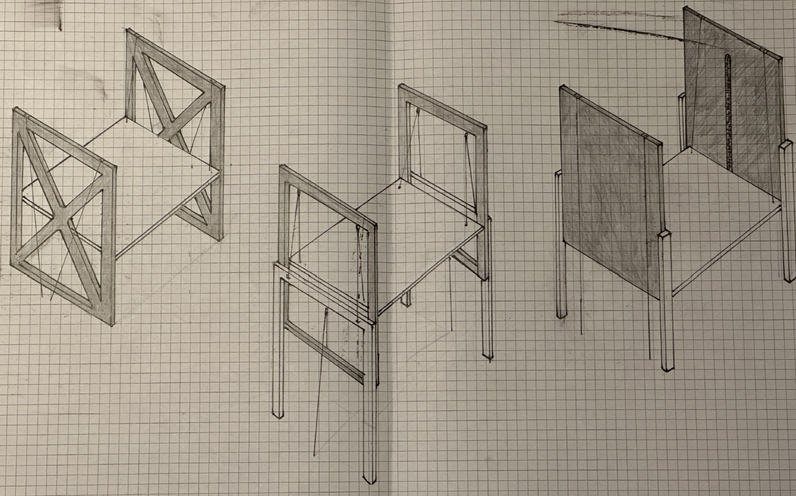
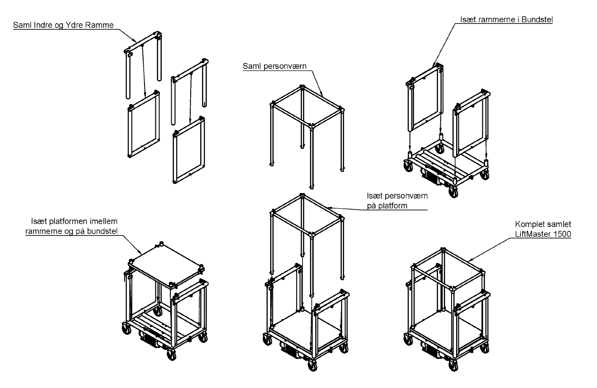
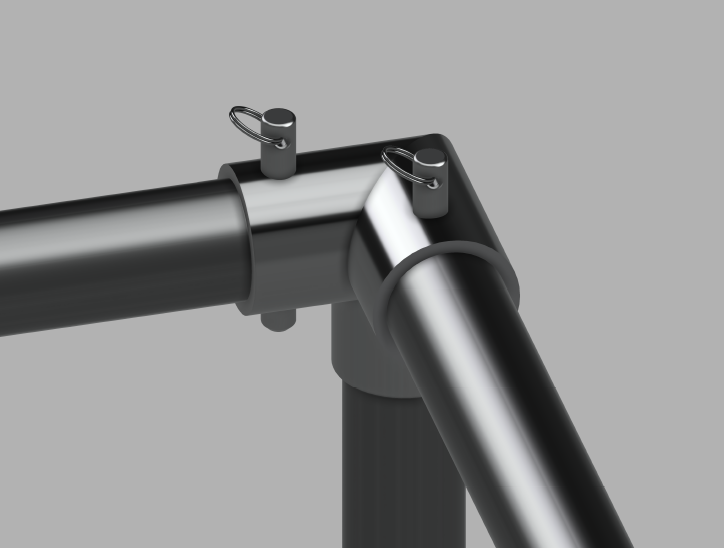

LiftMaster 1500 (LM15) is a compact, portable personal lift designed for tradespeople renovating older buildings - light enough to carry up five flights of stairs, and small enough to collapse through a doorway. Developed with A. Ussingkær as a DTU course project (41612, Product Design & Documentation), December 2024.
Description
Renovation work in older housing often happens in tight stairwells and small rooms a full-size personnel lift can't reach - and tightening restrictions on commercial vehicles in city centres mean contractors increasingly need equipment that can travel by cargo bike rather than van. LM15 is a response to that brief: a personal lift that raises a worker from 300mm to 1500mm in 15 seconds, rated for 300kg (360kg safety limit), and breaks down into 7 parts - none heavier than 25kg — that reassemble without tools.
The platform is pulled up on wires by an electric motor and winch mounted underneath it, running through ten pulleys for even, stable lift at all four corners. Each corner post is actually two: a telescoping inner and outer frame, connected to each other and to the platform by that same wire-and-pulley system, which keeps the collapsed footprint small. Nylon discs between the frames - screwed to bent steel plates rather than moulded in - cut friction and vibration where the platform rides up the inner frame, and can be swapped on their own without replacing the whole frame. The structure is built from standard 40×40mm, 2.6mm steel box tube, chosen and load-calculated (against the MMT handbook) for torsional stiffness at minimal weight; the safety railing secures in seconds via spring-pin pipe clamps.
Getting there took a fairly systematic process: desk research into existing lift types (scissor, boom, column), a morphological analysis across parameters like lift mechanism, power, feet, joints, and height control, then several rounds of principle and quantitative structure comparisons before settling on the telescoping double-frame column shown below. My focus on the project was the structural variation work and the worksheets that fed those concept decisions, alongside A. Ussingkær, who led the technical drawings and load calculations.

The morphological analysis: every parameter that could define the lift - mechanism, power, feet, joints, height control, safety, overload protection, gearing - laid out with the chosen answer marked in orange for each row.

Four candidate mechanisms considered early on: a single-column diagonal-wire lift, two variations pulling a platform straight up a column, and (bottom right) the telescoping inner/outer frame that became LM15's column.

Three refined variations on the column-and-platform relationship - cross-braced, telescoping double-frame, and wide-panel stabilization - compared before settling on the telescoping frame.

The full assembly sequence, tool-free: inner and outer frames together, into the base frame, platform in between, then the safety railing clips on and secures with pins.

The safety railing secures to the platform with spring pins through a pipe-clamp tee - the same fastening used throughout LM15 so nothing needs tools to assemble or replace. The entire lift was modelled in Fusion 360, where we also built animations of moving parts like this one to check and illustrate how each mechanism actually operates before it was built.